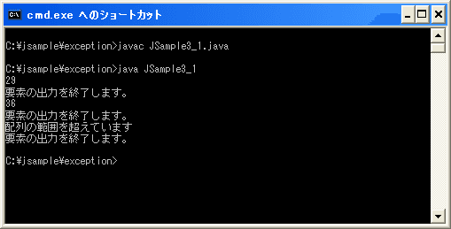

必ず実行する処理の記述(try..catch..finally)
tryブロックの中で例外が発生すると残りの処理は行われずにcatchブロックへ処理が移ります。次の例を見てください。
try{
実行する文1;
実行する文2;
実行する文3;
}
catch (例外クラス 変数名){
例外が発生した時に実行する文;
}
tryブロックの中で例外が発生しなければ「実行する文1」「実行する文2」「実行する文3」と順に実行しtry文の次へ処理が移ります。それに対して例えば「実行する文1」「実行する文2」と実行してここで例外が発生した場合にひあ「実行する文3」は実行されずにcatchブロックへ処理が移ります。(そして例外の種類がcatchのところに書かれた例外だった場合にはcatchブロック内の処理が実行されます)。
このようにtryブロックの中の処理は実行されたりされなかったりする可能性があるのですけど、try文を終了する前に必ず実行させたい処理があった場合にはfinallyを使用して記述することが可能です。具体的には次のように記述します。
try{
例外が発生しているかどうか調べる文1;
例外が発生しているかどうか調べる文2;
...
}
catch (例外クラス1 変数名1){
例外クラス1の例外が発生した時に行う文;
...
}
catch (例外クラス2 変数名2){
例外クラス2の例外が発生した時に行う文;
...
}
finally {
例外が発生するしないに関わらず実行する文;
...
}
finallyの後の「{」から「}」までのブロックに記述された処理は、try文の中で例外が発生してもしなくても必ず実行されます。その為、必ず行っておきたい処理がある場合にはfinallyブロックを用意してブロック内に記述するようにして下さい。
例えば次のように記述します。
int n[] = {18, 29, 36};
System.out.println("開始します");
try{
for (int i = 0; i < 4; i++){
System.out.println(n[i]);
}
}
catch(ArrayIndexOutOfBoundsException e){
System.out.println("配列の範囲を超えています");
}
finally{
System.out.println("配列の出力を終了しました");
}
System.out.println("終了しました");
この場合、try文の中で例外が発生してもしなくても必ず「配列の出力を終了しました」は画面に出力されることになります。
finallyとtry文の次に記述した場合との違い
なお、必ず実行される処理ということであれば次のようにtry文の次に記述しても同じように見えます。
int n[] = {18, 29, 36};
System.out.println("開始します");
try{
for (int i = 0; i < 4; i++){
System.out.println(n[i]);
}
}
catch(ArrayIndexOutOfBoundsException e){
System.out.println("配列の範囲を超えています");
}
System.out.println("配列の出力を終了しました");
System.out.println("終了しました");
このプログラムの場合には同じ結果となりますが、もしもこのプログラムがメソッドの中で記述されていてcatchブロックの中でreturn文などにより処理がメソッドの呼び出し元へ戻ってしまう場合にはtry文の次に記述された処理は実行されません。finallyブロックを使った場合はcatchブロックの中でreturn文などが実行された場合でも必ず実行されます。(ただしSystem.exit(0)によってプログラムが終了した場合を除きます)。
具体的には次のサンプルを参照して下さい。
サンプル
では簡単な例で試しておきます。
class JSample3_1{
public static void main(String args[]){
disp(1);
disp(2);
disp(3);
}
private static void disp(int no){
int n[] = {18, 29, 36};
try{
System.out.println(n[no]);
}
catch(ArrayIndexOutOfBoundsException e){
System.out.println("配列の範囲を超えています");
return;
}
finally{
System.out.println("要素の出力を終了します。");
}
}
}
コンパイル後に実行すると次のように表示されます。

finallyブロックに記述した処理は例外が発生してもしなくても必ず実行されます。またcatchブロック内でreturn文が実行されて呼び出し元へ処理が移る場合でもfinallyブロック内の処理は実行されています。
( Written by Tatsuo Ikura )

著者 / TATSUO IKURA
初心者～中級者の方を対象としたプログラミング方法や開発環境の構築の解説を行うサイトの運営を行っています。